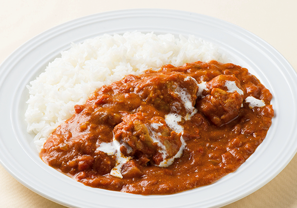

カレー with チキン

バターチキンカレー
ホールトマトを使う場合は、③でつぶしながら加えましょう。トマトの酸味と甘みにバターのコクが加わった、北インドの定番カレーをルウでお手軽に！
調理時間･･･25分以内
材料（6人分）
- 鶏もも肉（唐揚げ用）
- 300g
- 玉ねぎ
- 1個
- プレーンヨーグルト
- 1カップ（約200g）
- おろししょうが
- 小さじ1/2
- おろしにんにく
- 小さじ1/2
- ヴァルフルッタカットトマト
- 2缶
- （またはカットした生のトマト大4個）
- バター
- 30g
- 水
- 100ml
- S＆Bゴールデンカレー
- 1/2箱（99g）
- 砂糖
- 小さじ1・1/2
- 塩
- 適量
- 生クリーム
- 50ml
作り方
- 1
- ボウルに鶏肉、ヨーグルトを入れ、2分ほどしっかりと手でもみ込む。玉ねぎはみじん切りにし、カレールウは粗く刻む。
- 2
- 鍋にバター20g、にんにく、しょうがを入れて火にかけ、香りがたってきたら玉ねぎを加えしんなりとするまで炒める。
- 3
- カットトマト、水、①の鶏肉をヨーグルトごと加え、沸騰したら中火でフタをして10分ほど煮込む。
- 4
- いったん火を止めてルウを入れてよく溶かす。再び弱火で煮込み、砂糖、塩を加えて味を調え、仕上げに残りのバターを加える。
- 5
- 器に盛り付け、お好みで生クリームをかける。